トラックボールモジュールとタッチセンサーとクリック
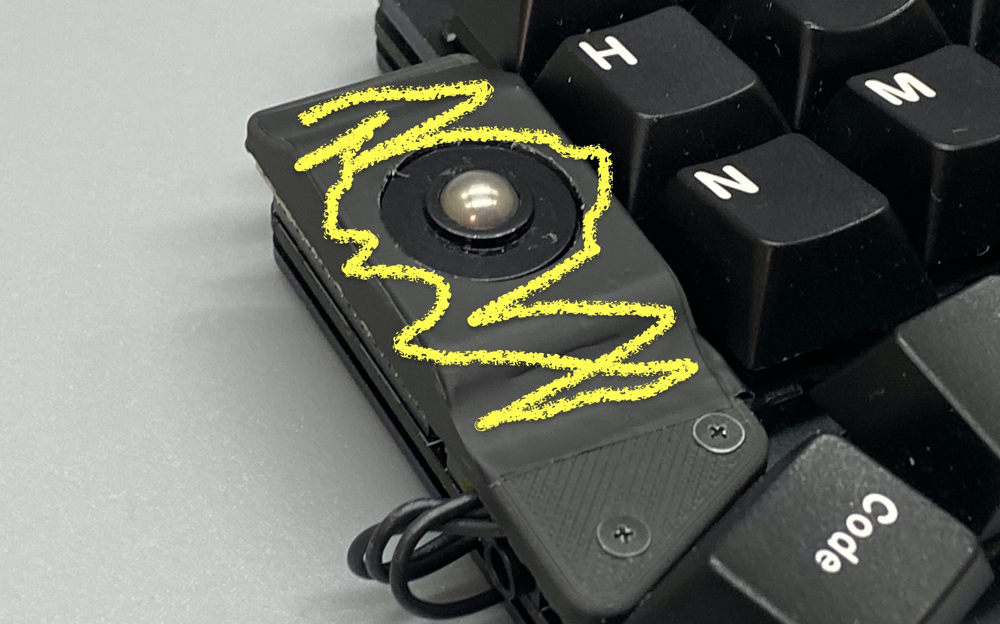この変に指があるとトラックボールレイヤーに切り替わって、ホームポジションでクリックとかできて快適になったよ、というお話です。
トラックボールモジュール
自作キーボードを作り始めて、指の移動距離を最小限に！とかやっているわけですが、マウスやトラックボールを使う時の移動はどうにかならないものか・・・と考えるものです。 ポインティングデバイスをキーボードに組み込めたらと思いつつ、そのようなモジュールの入手性や組み込む難易度は自分には高く、手を出せずにいました。
そんな時にビット・トレード・ワンさんから1uサイズのトラックボールモジュールが発売され、これは使わねば！と思い立ちました。
7mmオプティカルトラックボールモジュール１uタイプ | 遊舎工房

色々と組み込んでみた
Claw44やbat43に組み込んでお試し。
課題が出てきたので徐々に解決していってみます。
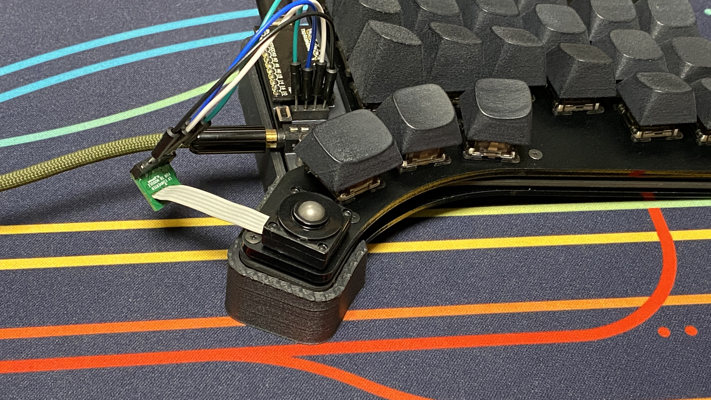
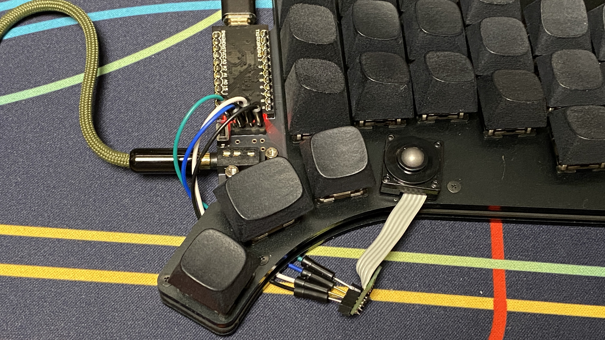

取り付けの課題
このモジュールには取り付け用の機構がないようなので、どう取り付けるかが課題になります。
ボトムハウジングを接着
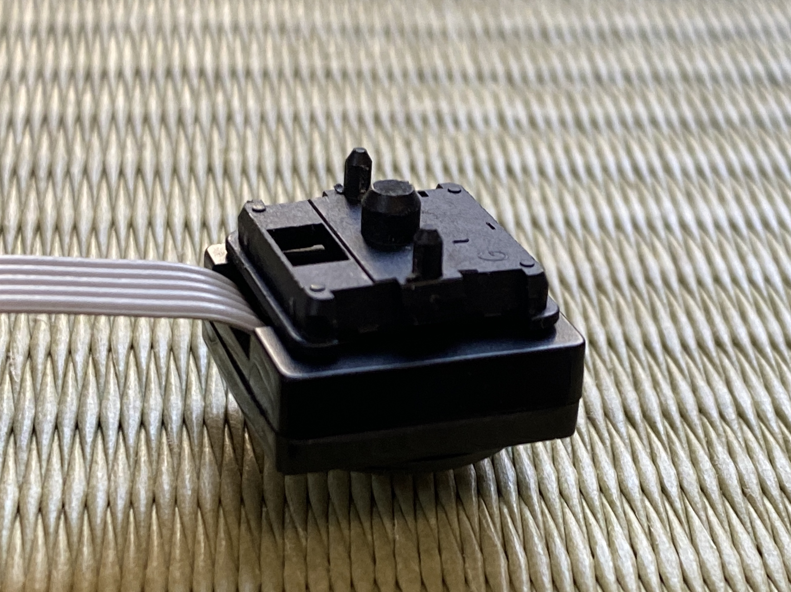まずは1uサイズなのでキースイッチがあるところに置けると良いなと思い、ボトムハウジングをちょっと加工して、接着剤で固定しました。
（内部に接着剤を流し込んで、一つダメにしました・・・養生をしっかりと・・・）
これは納まりが良いのですが、加工の手間はあるのでいまいち。
レベル変換基板がどこかに置けて、加工できる人なら良いかなと。
専用ケースを作る
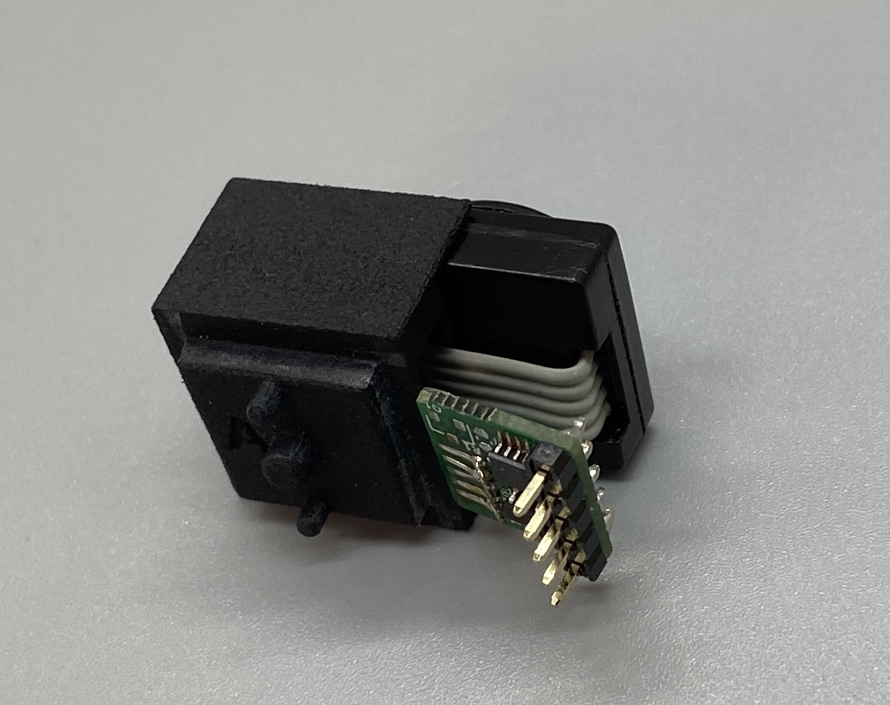 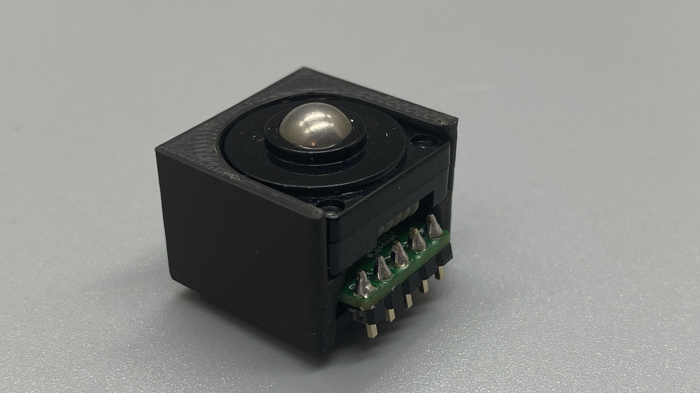bat43tbやtb7で採用した方式。
横からレベル変換基板と共に差し込むみます。
とてもコンパクトにできてお気に入り。
キーボードに合わせて作る

Claw44用に作った専用マウント。
ProMicroプレート部分の代替となるため、横から入れるのが厳しかったので上からかぶせる形に。
レベル変換基板がOLED用のピン配置を考慮してくれているので、変換基板も素直に収納できるのが良い。
下側は嵌め込むだけで安定したので、まだ素っ気ない感じ。
問題ありそうだったらサポート部分を検討する。
トラックボールの代替とするための課題
トラックボールを動かし、カーソルは快適に動かせるようになりました。
クリックがつらい
で、まず思ったのがクリックが思ったよりつらいなあと。
自分は主に40%を使っているので、レイヤーなしでダイレクトに打つキーはそんなに空いていない。
Claw44の場合は親指の両端を使ってみたけど、やはりちょっと負荷が高いように感じます。
普通にトラックボールを使う時は、最適化された状態で使うため無駄な負荷が少ないです。
そのため、ついついちょっと腕を移動させてでもトラックボールを使いたくなってしまいます。
（自分はMX Ergoを愛用）
ホームポジションの取り合い
キーボードでトラックボールの機能を使おうとすると、本来のホームポジションとはずれた状態になることが多い。
多少の時間なら良いのだが、トラックボール主体の動きが長くなるとだんだんと辛くなってくる。
こちらのbat43の場合は、キーボード側のホームポジションを一個ずらし犠牲にしてクリックボタンを押しやすくしてみたが、本末転倒な感じでキーボードが使いにくくなってしまったので断念。
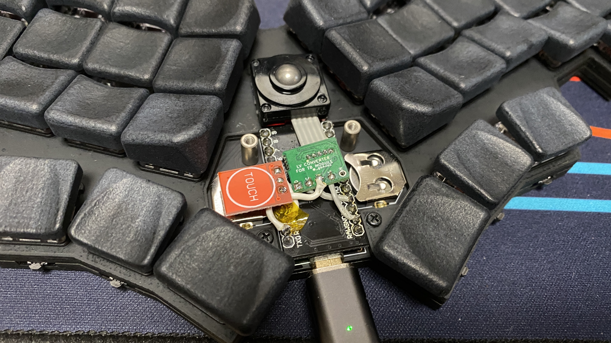 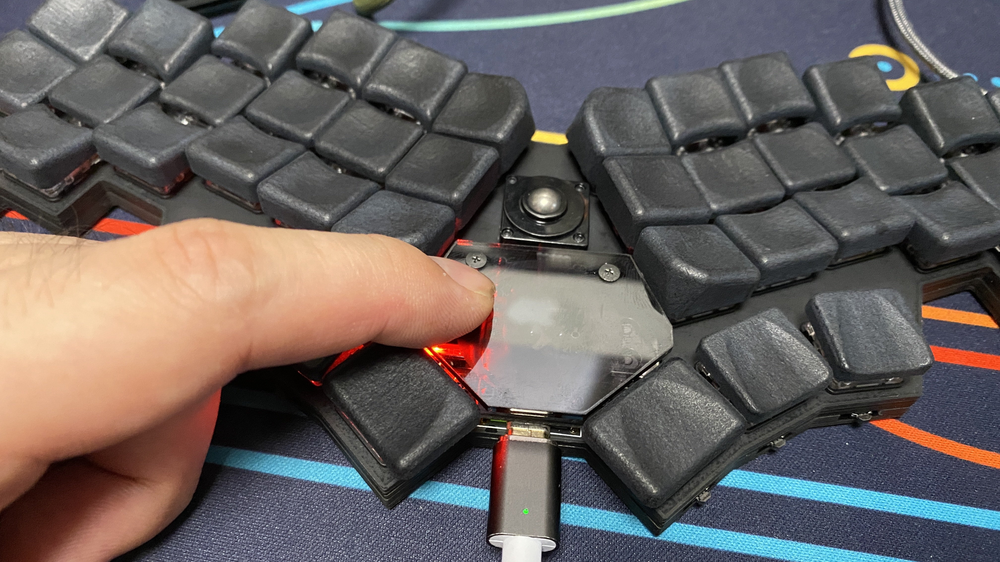空いているところにクリックボタンを置いてしまえと試してみたのがこちら。
キースイッチを置くスペースはなかったので、タッチセンサーを使ってみた。
これはこれでよかったのだが、無理やり置いてしまったので細かな位置決めができず、もうちょっと改善したくなった。
それで作ったのがbat43tb。ProMicro→MCU直付けすることによってクリックボタン分のスイッチを配置。
これもこれで良いのだが、もうちょっと配置を良くできそうなので、そのうち改善版を出したいと思っています。
改めて課題を整理
- トラックボールの玉を動かせるだけではトラックボールの代替にはならない。
- クリックやホイールの機能なども快適に使える状態でないと移行率は低くなり、結局ほとんど隣に置いてあるトラックボールを使ってしまう。
- ただでさえ詰め込んで小さくしているので、そこに機能を加えるにはひと工夫必要そう。
トラックボールでやっていることを挙げてみると、
- カーソル操作
- クリック（左、中、右）
- スクロール
- 戻る、進むボタン（これは個人差があるかも）
あたりでしょうか。
カーソル操作はできるようになったので、まずはホームポジションでクリックを快適に押すことを考えてみます。
解決案：レイヤーに配置
まず思いつくのが、レイヤーの中にクリックボタンを配置すること。
これで問題ない方もいると思います。
自分は今まで1クリックでできてたものが、レイヤーキー→クリックキーと2ステップになってしまうのが面倒くなり無理でした。
解決案：タッチセンサー
クリックするのは基本的にはトラックボールを操作している時なので、トラックボールを動かしている時だけ、別レイヤーになれば良いなと考えてみます。
しかし、常にボールが動いているわけではないので、トラックボール側の情報だけではキツそう。
このコンパクトなモジュールをいじるのも辛そう。
で、考えたのがこの前タッチセンサーでうまいことできないかなと。
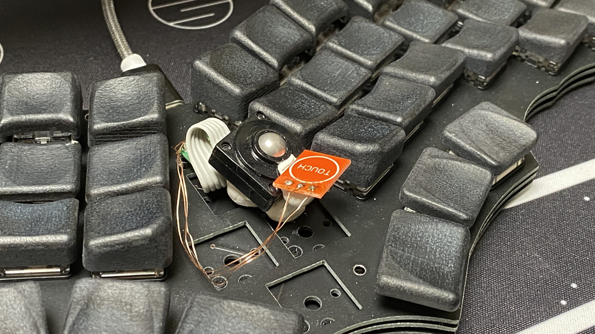試行錯誤してこんな形になりました。
タッチセンサーの感度としては、だいたい8mmくらいな感じです。
そのため配置を工夫しないと、レイヤー切り替えしていて欲しいところでされてなくてストレスになります。
一旦、位置決めがされてしまえばとても快適に使えます。
センサーはAmazonでも入手可能なTTP223というやつです。安価でなかなか使えるやつです。
自分はTTP223で買ったけど、もっと安いのも出ている模様。
電源やPINは基板下面に付けておいたテープLED用のパッドを利用。
こういうことをやっていると使っていないProMicroのピンは触れるよう出しておきたいなと思うようになる。
解決案：タッチセンサー拡張
仕事が立て込んでいて、ちょっとしたモデリングをして3Dプリンタを動かすくらいしかできず、気晴らしにClaw44用のトラックボールモジュールマウントを作ってみました。
使ってみたのですが、やはりクリックボタンつらいなあという気持ちが。
こっちにもbat43同様にタッチセンサーを付けてみました。
同様に付けてみて、確かにちゃんと動くのですが不格好だなあと。
タッチセンサーを調べていた時にアルミホイルで検出部分を拡張していたことを思い出す。
ごちゃごちゃと両面テープとアルミホイルで試作。
なるほどなるほど。こんな感じで拡張ができました。
これならより玉に近い部分での検出が可能になので、より安定しました。
だが、見た目と耐久性0だなこりゃ。
とりあえず黒いアルミホイルを探してみる。
焼き芋用の黒いのを発見。こんなものもあるのね。
でも耐久性なーと思っていると、アルミテープを発見。
こちらもマットブラックなものがあるのでポチポチと。
ひとまずこれで作ってみます。
今のところの作り方
-
上面にアルミテープを貼る
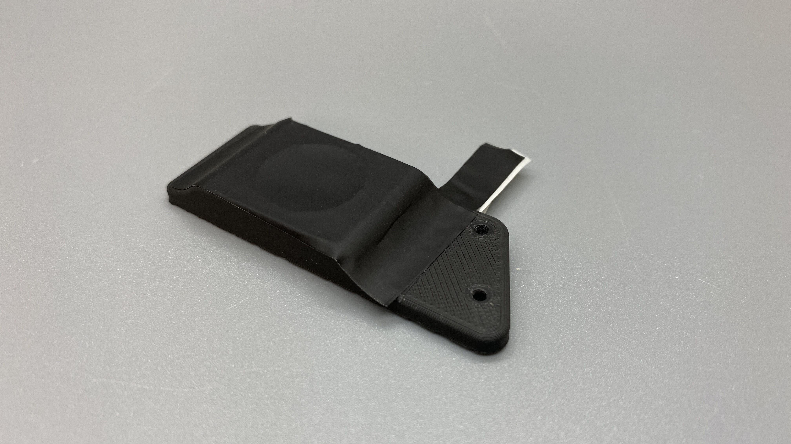 -
穴をくり抜く
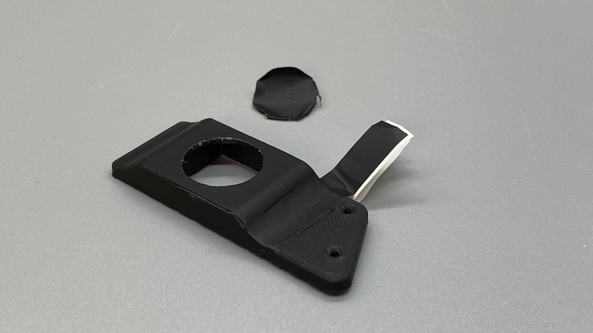 -
下面にタッチセンサーを配置
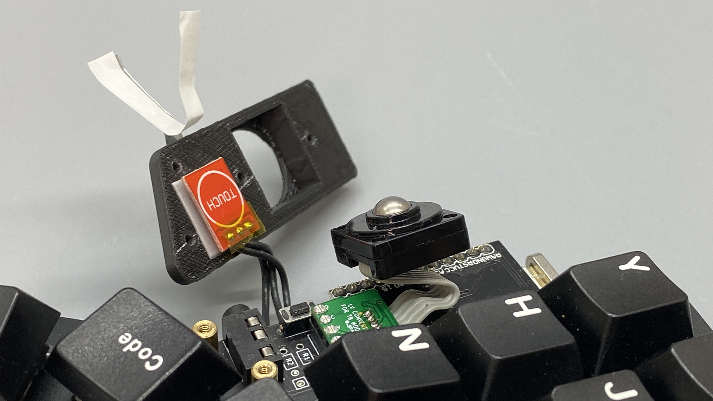 -
上面のアルミテープとタッチセンサーを接続（貼ってるだけ）
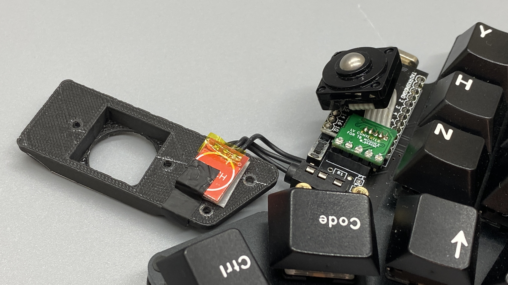 -
ねじ止めして完了
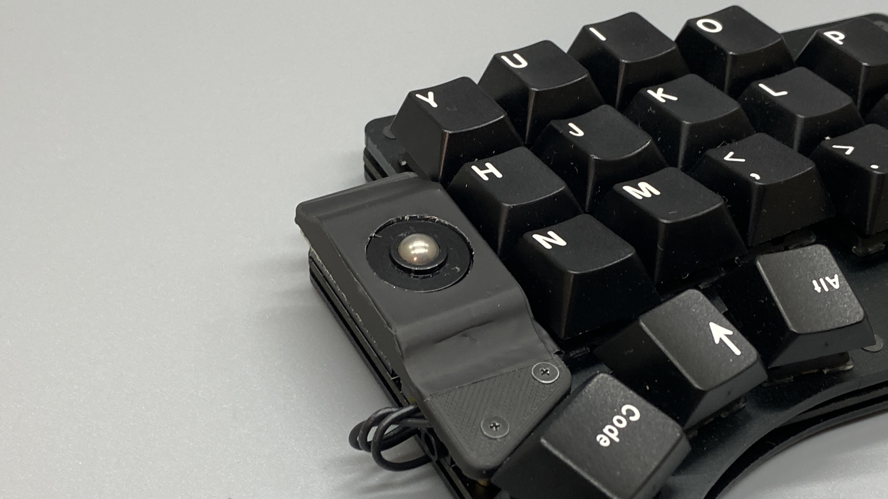 -
写真だとわかりにくいですが、良い感じに反応してくれてます（タッチセンサーのLEDが赤く光っている）
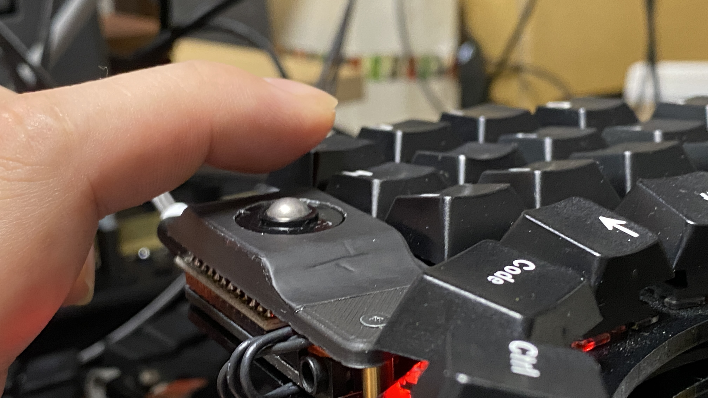 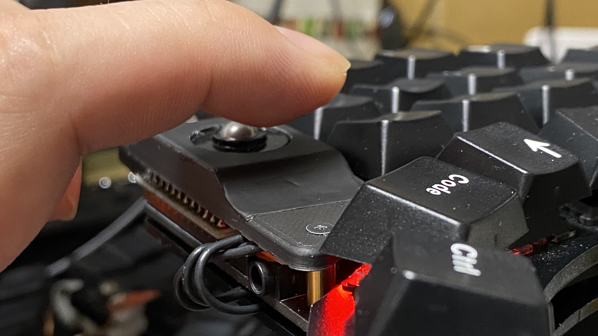 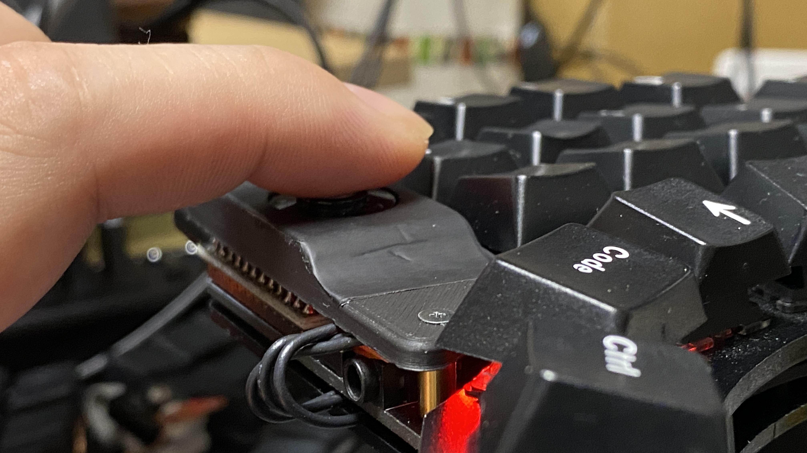
ファームウェア
このタッチセンサーが反応した時にトラックボール用のレイヤーに切り替わるようになっています。
自分は親指キーにクリックなどの機能をまとめました。
ASDFあたりでも良いのですが、自分は既にmodifierを割り当てているのでCmd+クリックとかがやれなくなってしまうので使えず。
-
トラックボール用のライブラリや使い方はこちらを利用&参考にさせてもらっています。（ せきごんさんありがとうございます！） https://github.com/sekigon-gonnoc/qmk_firmware/tree/dev/ble_micro_pro/keyboards/helix/rev2/keymaps/bto_tb
-
ドラッグ&ドロップやスクロールもできるようにqmkのポインティングデバイスの機能を使っています。
（QMKドキュメントの和訳ありがとうございます！！）
https://docs.qmk.fm/#/ja/feature_pointing_device -
なるべくホームポジションを崩さないために、トラックボールの向きは45度回転させています。
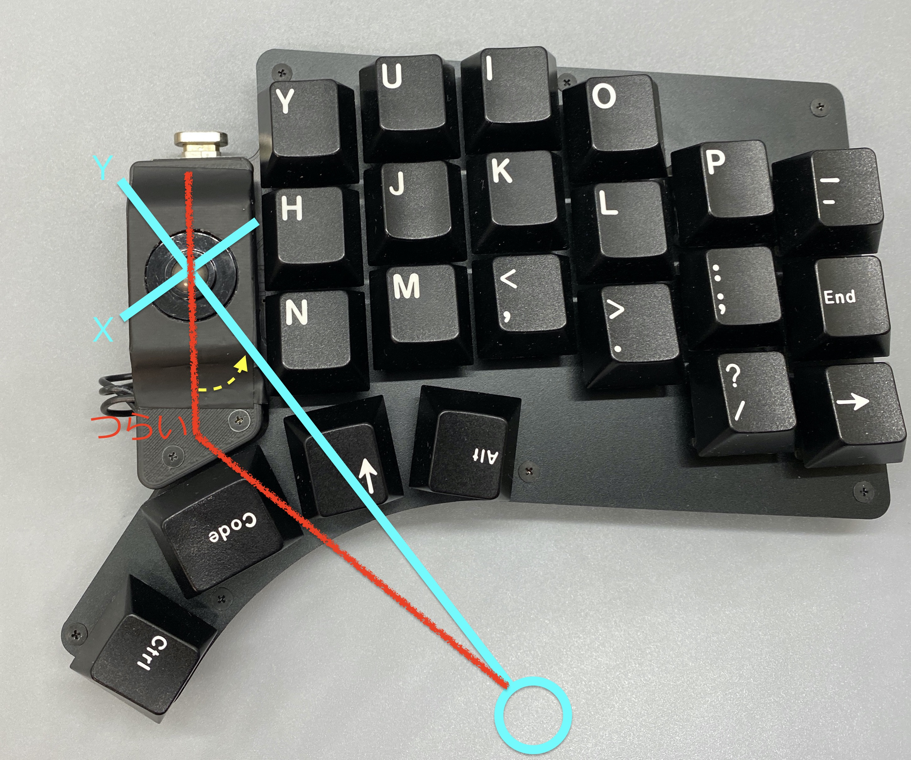 -
ソースはこの辺に置いてあります。適当にいじっていくかもしれないです。(雑コードですいません・・）
https://github.com/yfuku/qmk_firmware/blob/yfuku/keyboards/claw44/keymaps/trackball/keymap.c
まとめ
ある程度使える状態になった感があるので記事にしてみました。
センサー部分についてはもっと使いやすいものがあるかもしれないので改善の余地ありだと思っています。
何か良さそうなのをご存知でしたら教えてください！！
（手ごろに手に入るフォトリフレクターを試してみたけど、思ったより検出距離が短く断念した）